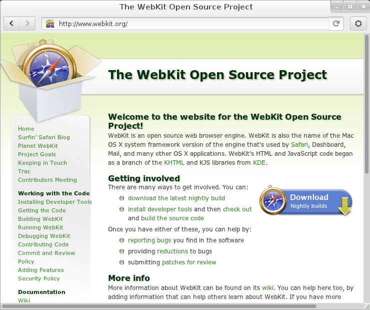
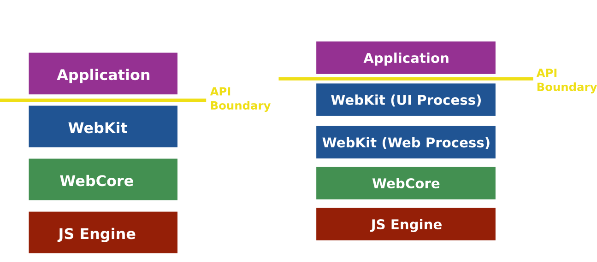

WebKitGTK+:
Current status and roadmap
Mario Sánchez Prada <mario@igalia.com>
WebKit and WebKitGTK+
What is WebKit?

What is WebKit?

What is WebKitGTK+?

Who is using WebKitGTK+?
WebKit2
What is WebKit2?

WebKit2: API & Process Boundaries

WebKit2: API & Process Boundaries

WebKit2: State of the art
- WebKit2 announced back in April 2010
- Apple and Qt already released WK2 browsers
- Epiphany with WK2 support in GNOME 3.6
- WebKit2GTK+ stable API to be released soon
- Cross-platform C API exists, internally used
- Most challenges of multi process model solved
- Tests running, need to deploy more test bots
WebKitGTK+: Current Status
Previously in WebKitGTK+...
- Migrated to GTK+ 3.x. Kept GTK 2.x support.
- Independent JavaScriptCore library
- Improved HTML5 support
- WebGL support (not enabled by default)
- GObject bindings for the DOM
- On-disk network cache
- Spell checking APIs
- Improvements in accessibility support
- Basic support for WebKit2 (WebKit2GTK+)
Stable release (1.8)
- Improvements in performance (backing store)
- DFG JIT compiler enabled in JavaScriptCore
- HTML5 history APIs
- WebGL support built by default
- Initial support for Accelerated Compositing
- Experimental support for WebAudio
- Geolocation API built by default
- Preliminary version of WebKit2GTK+ API
- Enabled accessibility support in WebKit2GTK+
WebKitGTK+: Roadmap
WebKitGTK+ Roadmap
WebKit1
- In maintenance mode from GNOME 3.6 on
- Epiphany no longer using WK1 after 3.8
- Other apps could start migrating as well
WebKit2
- Beta version of WebKit2GTK+ API for GNOME 3.6
- New development will happen in WebKit2GTK+
- Parallel installable with WebKit1
Next stable release (1.10)
- Support for Accelerated Compositing
- WebGL enabled by default
- Support for HTML5 Fullscreen and WebAudio
- Multimedia layer ported to GStreamer 0.11
- Support for the Low-Level Interpreter in JSC
- Beta version of the WebKit2GTK+ API:
- Context menus, Web Inspector, on-disk cache
- HTML5 fullscreen, cookies, geolocation
- Favicons, spell-checking, print support
- Documentation, GI annotations
- More tests running and passing (also for WK2)
Upcoming releases (2.0, 2.2...)
- First stable API of WebKit2GTK+ for 2.0
- Stabilization of the WebKit2GTK+ API
- Add more API to WebKit2GTK+ as required
- HW accelerated Video Rendering
- Integration of the cairo-gl backend
- Port more apps to WebKit2GTK+ (yelp, ephy...)
Wrapping up
Conclusions
- Mature port of WebKit, used everywhere
- Released regularly (every 6 months)
- Suitable for writing modern browsers
- Great option for embedders
- Lots of improvements during the previous months
- WebKit1 in maintenance mode since GNOME 3.6
- WebKit2GTK+ beta API since GNOME 3.6
- Stable WebKit2GTK+ API expected for 3.8
- Epiphany with WK2 by default expected for 3.8
Reporting bugs and Contributing
- www.webkit.org
- bugs.webkit.org
- www.webkitgtk.org
- trac.webkit.org/wiki/WebKitGTK/WebKit2Roadmap
- Mailing lists:
- webkit-gtk@lists.webkit.org
- webkit-dev@lists.webkit.org
- IRC channels on irc.freenode.net:
- #webkitgtk+ and #webkit
Thanks!